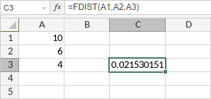

FDIST Funkcija
FDIST funkcija je jedna od statističkih funkcija. Koristi se za vraćanje (desno-rezane) F verovatnoće distribucije (stepen raznovrsnosti) za dva skupa podataka. Možete koristiti ovu funkciju da odredite da li dva skupa podataka imaju različite stepene raznovrsnosti.
Sintaksa
FDIST(x, deg_freedom1, deg_freedom2)
FDIST funkcija ima sledeće argumente:
| Argument | Opis |
|---|---|
| x | Vrednost na kojoj treba izračunati funkciju. Numerička vrednost veća od 0. |
| deg_freedom1 | Stepeni slobode brojioca, numerička vrednost veća od 1 i manja od 10^10. |
| deg_freedom2 | Stepeni slobode imenitelja, numerička vrednost veća od 1 i manja od 10^10. |
Napomene
Kako primeniti FDIST funkciju.
Primeri
Slika ispod prikazuje rezultat koji vraća FDIST funkcija.
